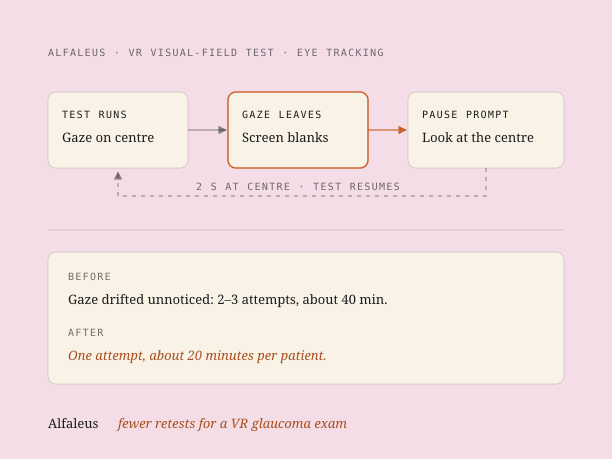

Fewer retests for a VR glaucoma exam
Alfaleus makes a VR version of the Humphrey visual-field test, which doctors use to check for glaucoma. The test only works if the patient keeps looking at the centre. Over 10 to 15 minutes, patients' gaze drifted and nobody noticed, so most had to take it two or three times. I added eye tracking that pauses the test when that happens.

A test that depends on keeping still.
In a visual-field test, the patient keeps their gaze fixed on the centre for the whole test. In Alfaleus's VR version that takes 10 to 15 minutes. Patients got restless, and their gaze drifted. Neither the system nor the doctor noticed when it happened.
So the test had to be run again. Most patients needed 2 to 3 attempts, sometimes 5. That came to about 40 minutes per patient.
Patients' gaze drifted off the centre during a 10 to 15 minute test, without the system or the doctor noticing, so most patients had to repeat the test two or three times.
Asking the doctors who ran it.
This was an existing product, so I started with the people already using it. I interviewed doctors at AIIMS New Delhi and Pondicherry Government Hospital who ran the VR test with their patients. The drifting gaze, and the retests it caused, came out of those conversations.
Pause the test when the eyes wander.
I added eye tracking inside the VR headset. When the patient's gaze leaves the centre, the screen blanks and a pause prompt appears. The patient looks at the centre for 2 seconds, and the test resumes.
One attempt per patient.
A VR app to help low-vision patients see.
I also designed and built a VR app for partially sighted patients, to enhance what they can see. It has:
- Adjustable contrast
- Zoom
- Concave and convex lens simulation
- Colour profiles the patient can switch between
[TODO: images, what the pause prompt looked like, any other details]